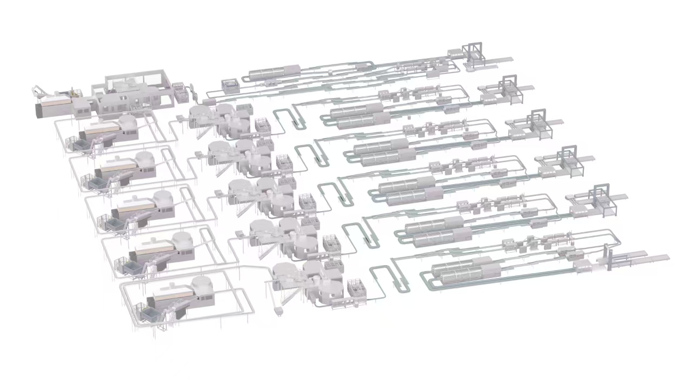

整线群组：制二生产车间
TPM 智能生产维护大屏
飞书多维表格已连接
2026-06-27 17:41:00
整线综合设备效率 (OEE) 实时
故障停机原因帕累托分析
在线运行设备台数
36
今日待结故障工单
1
整线 PM 计划达标率
98.2%
整线精益指标 30天历史趋势图
整线物理空间映射

01号灌装机：气缸卡阻
04号套标机：传感器偏移
各设备 MTBF / MTTR 指标量化对比
飞书多维表格现场流水记录
设备名称
当前状态
最新触发事件
01号 灌装机
紧急故障
灌装阀升降气缸卡阻报警
02号 吹瓶机
计划保养
执行二级常规加热箱反光片清洁
03号 瓶胚机
点检异常
液压油路滤芯压差过大预警
04号 套标机
突发停机
切刀传感器未感应到标签纠偏锁死
05号 包装机
切换模具
根据计划进行SMED快速换型工序
06号 码垛机
正常运行
抓取机械手第4轴平稳运行中
01号 灌装机
紧急故障
灌装阀升降气缸卡阻报警
02号 吹瓶机
计划保养
执行二级常规加热箱反光片清洁
03号 瓶胚机
点检异常
液压油路滤芯压差过大预警
04号 套标机
突发停机
切刀传感器未感应到标签纠偏锁死
05号 包装机
切换模具
根据计划进行SMED快速换型工序
06号 码垛机
正常运行
抓取机械手第4轴平稳运行中